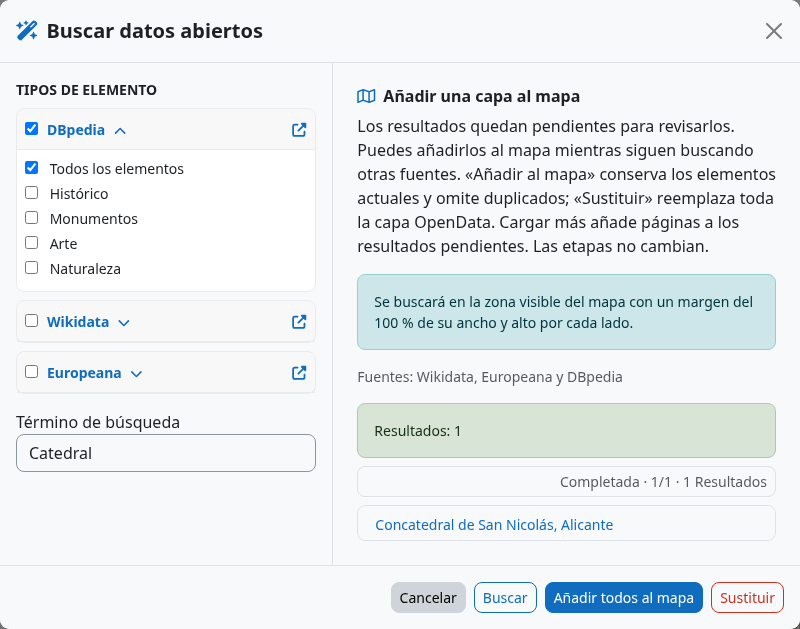
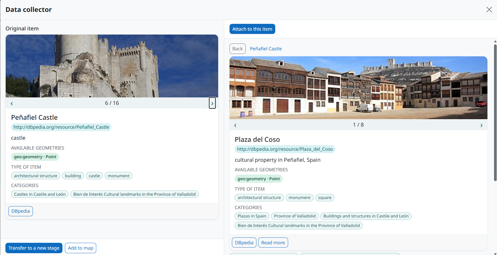
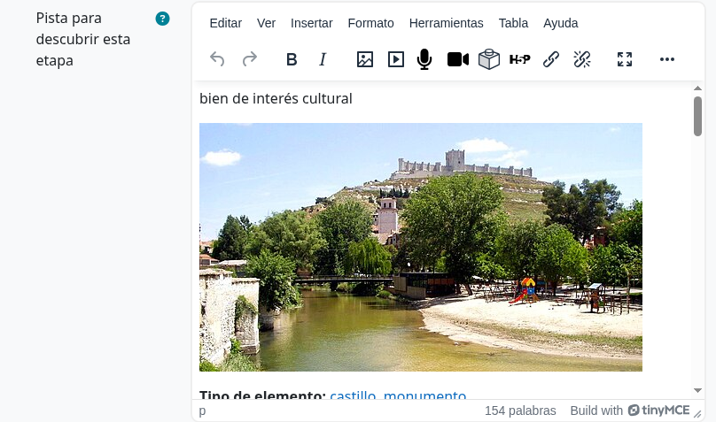

From public data to a learning stop
The OpenData assistant in the geographic editor searches for points of interest around the current visible map area. It brings together records from available providers so a teacher can inspect context before choosing a location. Categories can cover history, industry, monuments, art and other themes.

Providers and setup
DBpedia and Wikidata supply linked open knowledge. Europeana brings cultural heritage objects and requires an API key configured by the site administrator. Provider coverage, descriptions, image rights and geographic precision vary. Every result should be checked before it becomes a learning task.
Search and curate results
- Open the activity’s standard geographic editor and frame the area you want to study.
- Choose the OpenData wand next to the location search. Select one or more themes and, if useful, add a text term.
- Launch the search. Follow the status shown for each provider; completed results can already be reviewed while other sources are still running.
- Inspect each point’s card: name, alternative names, description, topics and types, image, links and source. Hover a point to see its title.
- Choose Add to map to keep current results or Replace to start the layer from the new selection. The layer is stored locally in your browser for this activity. A search alone does not overwrite it.
Collect related source records
Open a result to compare it with related records in the Data collector. The original item stays on the left; related items appear on the right. Browse their images and metadata, then use Attach to this item to collect useful context. When you have enough information, choose Transfer to a new stage to draft a stage from the selected item, or Add to map to keep it in the temporary OpenData layer.

Create a stage from a result
Open a promising result and choose Create stage with this item. The stage receives a location area and draft text built from available metadata, including names, descriptions, categories, links and an external resource image when available. Verify the point is correctly placed, rewrite the clue for your learners, and check licensing and attribution before sharing the image.

A useful editorial checklist
- Does the point lead to a safe, accessible place?
- Is the source description accurate and appropriate for the course?
- Is the linked image permitted for your intended use?
- Does the clue require observation or reasoning, beyond reading a data record?
- Will learners without GPS still have a workable path or QR alternative?